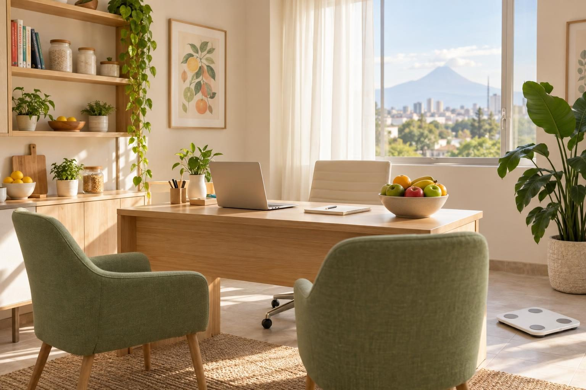
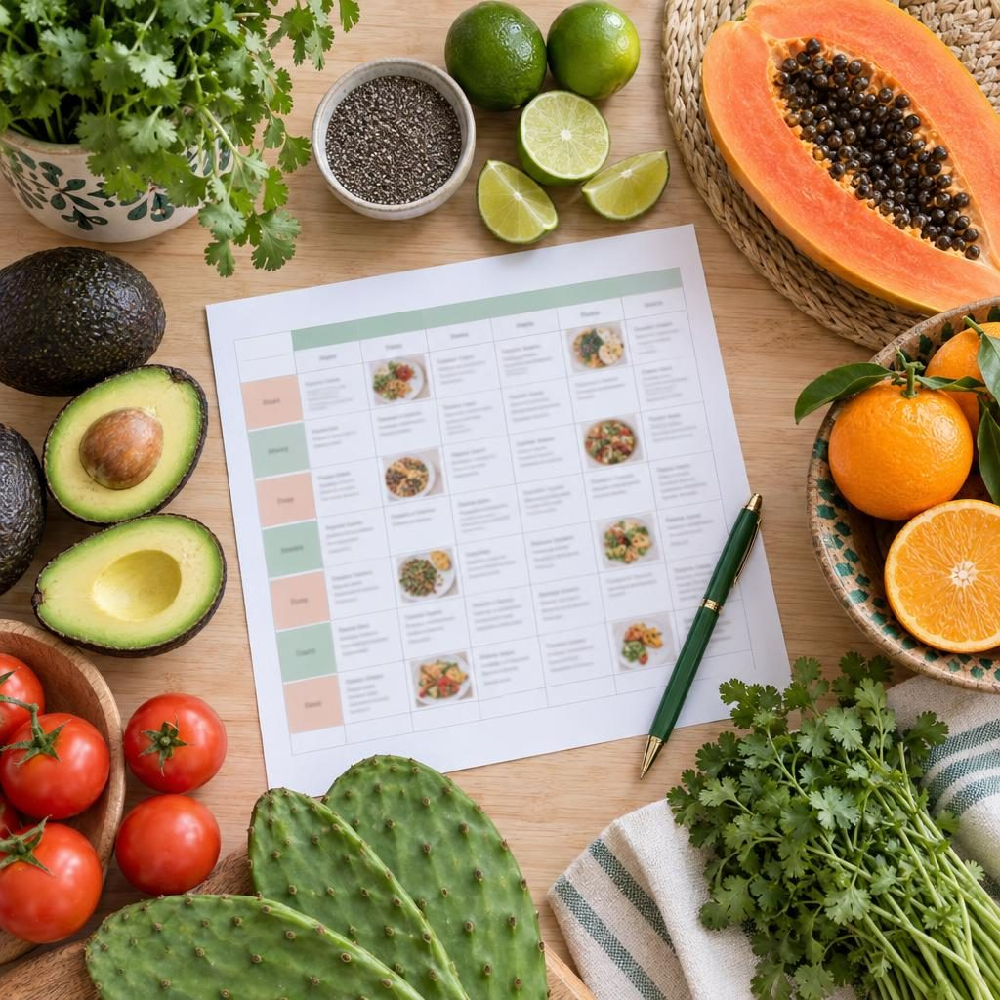
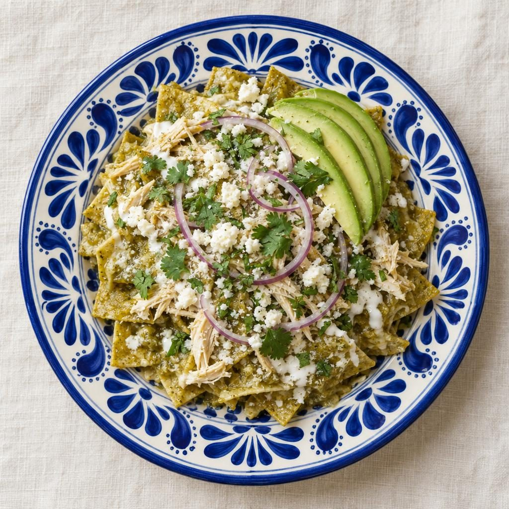
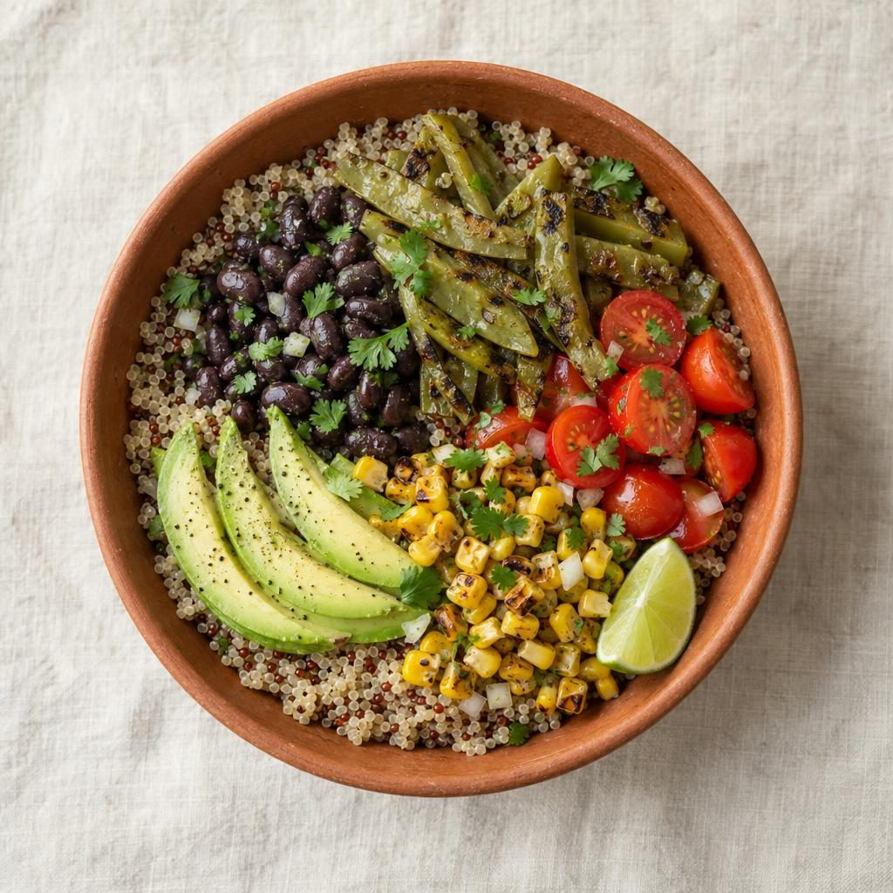
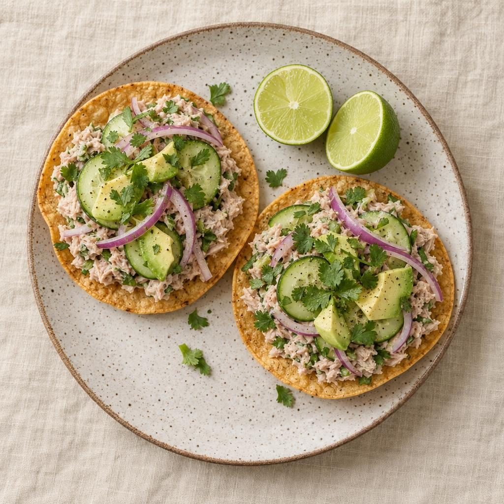
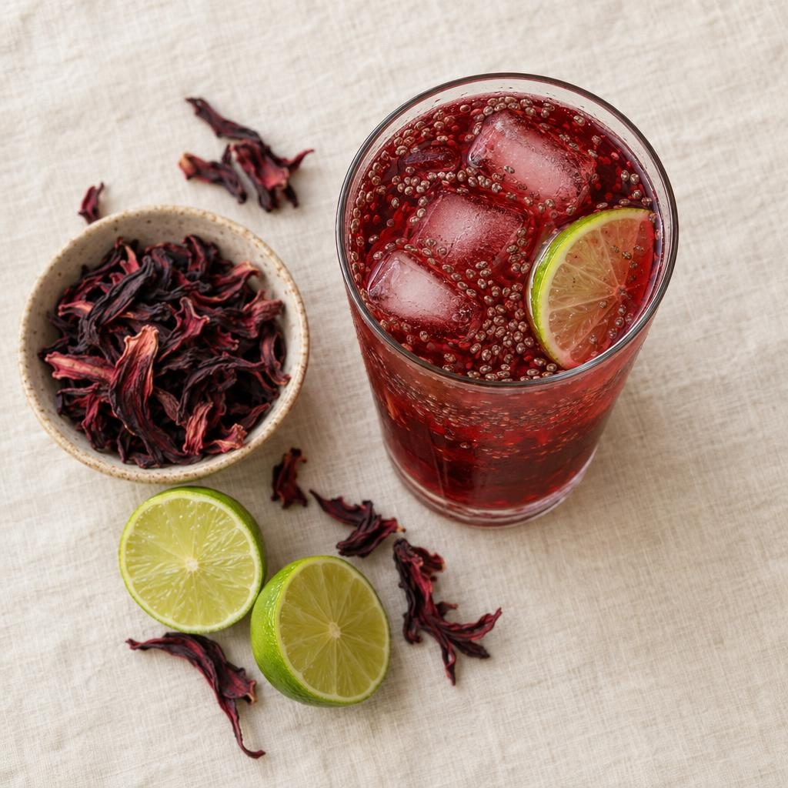

Presencial en La Paz, Puebla
Con medición de composición corporal en cada visita. Estacionamiento gratis.
Nutrióloga en Puebla · presencial y en línea
Planes de alimentación con comida mexicana de verdad, hechos para tu rutina, tu salud y tu bolsillo. Sin productos milagro y sin pasar hambre.
Todo tiene solución, y empieza por un plan hecho para ti. Haz el test →
Test de 1 minuto
Cuatro preguntas rápidas. Al final te digo qué plan te conviene y me lo mandas por WhatsApp para agendar.
Planes
Todos incluyen consulta de 60 minutos, medición de composición corporal y tu plan en 48 horas.
Bajar de peso y crear hábitos
$750 por consulta
El más pedido
Glucosa, colesterol, presión, SOP o tiroides
$900 por consulta
Ganar músculo y rendir más
$850 por consulta
¿Vienes con tu pareja o un familiar? La segunda consulta tiene 20 % de descuento.

Cómo funciona
Platicamos de tu historia, tu rutina y lo que te gusta comer. Medimos tu composición corporal.
Menú semanal con recetas, porciones fáciles de medir y lista del súper.
Revisamos avances, ajustamos lo que no funcione y cambiamos recetas para que no te aburras.
¿Una fiesta, un viaje o un antojo? Escríbeme y lo resolvemos juntos.
Así se ve comer bien
Con ingredientes del mercado y en menos de 20 minutos. Nada de comprar cosas raras.

Desayuno

Comida

Cena

Bebida
Sobre mí
Soy poblana, amo el mole y no creo en las dietas que te quitan todo. Estudié Nutrición porque vi a mi papá batallar con la diabetes con planes imposibles de seguir.
Desde 2017 ayudo a personas ocupadas a comer mejor con lo que ya hay en su cocina. Mi meta es que algún día ya no me necesites.
Modalidades

Con medición de composición corporal en cada visita. Estacionamiento gratis.
Por videollamada. Te enseño a medirte en casa con una cinta y tu báscula.
Resultados reales
−9 kg en 5 meses
“Por primera vez bajé sin pasar hambre y sin dejar las tortillas. Ya llevo un año sin rebote.”
Glucosa en rango
“Mi médico me bajó la dosis de metformina. Daniela me enseñó a armar mis platos sin complicarme.”
Primer medio maratón
“Terminé mi primer medio maratón con energía. El plan de comidas antes de correr cambió todo.”
Los resultados varían de persona a persona.
Preguntas frecuentes
Si tienes estudios de laboratorio recientes, tráelos. Ven con ropa cómoda y, de preferencia, sin haber hecho ejercicio ese día.
No. Tu plan incluye la comida que te gusta en porciones que te funcionen. Nada está prohibido.
Sí, a partir de los 6 años y siempre con mamá, papá o tutor en la consulta.
Aceptamos efectivo, transferencia y tarjetas. Sí doy factura; pídela al agendar.
Avísame con 24 horas de anticipación por WhatsApp y la cambiamos sin costo.
Contacto
Escríbeme por WhatsApp o haz el test para que llegues con tu plan sugerido.
| Lunes a viernes | 9:00 a 19:00 |
|---|---|
| Sábado | 9:00 a 13:00 |
| Domingo | Cerrado |